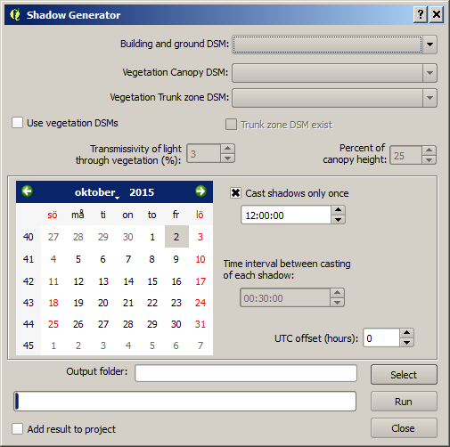
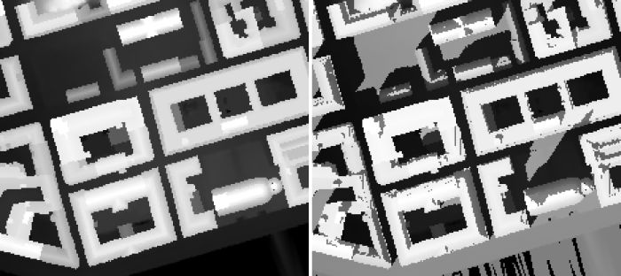

The
Shadow generator plugin can be
used to generate pixel wise shadow analysis using ground and building digital
surface models (DSM). Optionally, vegetation DSMs could also be used. The
methodology that is used to generate shadows originates from Ratti and Richens
(1990) and is further developed and described in Lindberg and Grimmond (2011).
Position of the Sun is calculated using
PySolar, a python library for
various Sun related applications (http://pysolar.org/
).
The Shadow Generator is located at UMEP
-> Processor -> Solar Radiation -> Daily Shadow Pattern.
When you run plugin, you will see the dialog shown below. It consists of a top
section where input data is specified, middle section where setting for
positioning the Sun on the hemisphere is found and a bottom section for
specifying output and for running the calculations.

A DSM consisting of ground and building heights. This dataset also decides the
latitude and longitude used doe calculation of Sun position.
A DSM consisting of pixels with vegetation heights above ground. Pixels where no
vegetation is present should be set to zero.
A DSM (geoTIFF) consisting of pixels with vegetation trunk zone heights above
ground. Pixels where no vegetation is present should be set to zero.
Tick this box if you want to include vegetation in the final SVF.
Tick this in if a trunk zone DSM already exist.
Percentage of light that is penetrating through vegetation. Default value is set
to 3 % according to Konarska et al. (2013).
If a trunk zone vegetation DSM is absent, this can be generated based on the
height of the Canopy DSM. The default percentage is set to 25%.
The data need to be set in the middle section
Tick this box if you only want to cast one shadow. Below this tick box you can
set the time that is need to decide the position of the Sun.
If the above tick box (Cast shadows only once) is not ticked in, a number of
shadows is generated based on the interval set.
Time zone needs to be specified. Positive numbers moving west (e.g. Stockholm
UTC +1)
A specified folder where result will be saved.
This starts the calculations
If this is ticked in, the total SVF raster will be added to the map canvas
This button closes the plugin.
If only one shadow image is generated, one geoTIFF will be produced where pixel
values of zero indicates shadow and one indicates sunlit. If daily shadow
casting is used (Cast shadows only once ticked off), one shadow image for each
time step as well as one shadow fraction image is generated. The shadow fraction
image is given in percent where 100% meaning the a pixel is sunlit throughout
the day used in the calculation.
The figure below shows an example of input data and the resulting shadow image
in Gothenburg
(1 m resolution),
Sweden at 1 pm on the 2nd of October 2015 (daylight savings time).

- All DSMs need to have the same extent and pixel size.
- This plugin is computationally intensive i.e. large grids will take a lot of
time and very large grids will not be possible to use. Large grids e.g. larger
than 4000000 pixels should be tiled before.
Konarska J, Lindberg F, Larsson A, Thorsson S, Holmer B 2013. Transmissivity of
solar radiation through crowns of single urban trees—application for outdoor
thermal comfort modelling. Theoret. Appl. Climatol., 1–14 (link
to paper)
Lindberg, F., Grimmond, C.S.B., 2011a. The influence of vegetation and building
morphology on shadow patterns and mean radiant temperatures in urban areas:
model development and evaluation. Theoret. Appl. Climatol. 105, 311–323 (link
to paper)
Ratti CF, Richens P (1999) Urban texture analysis with image processing
techniques. In: Proceedings of the CAADFutures99, Atalanta, GA